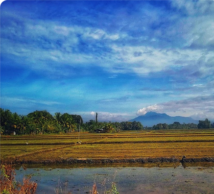
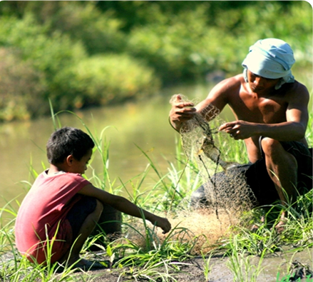
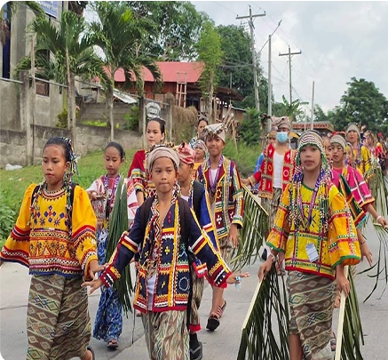
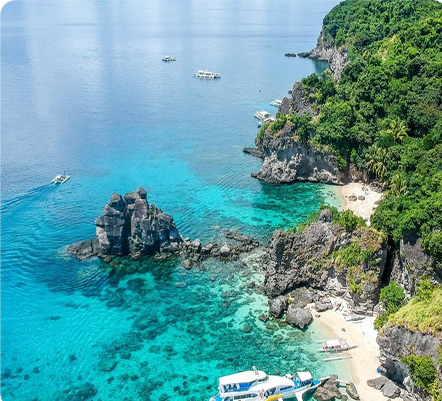

MUNICIPALITY OF BRAULIO E. DUJALI
Braulio E.Dujali Municipality is located in Davao del Norte Province, Philippines with a total population of 35,729 people, According to the 2020 census. January 30, 1998, when this town was defined through the Republic Act No.8473, carved from parts of Panabo and Carmen and named after Braulio Española Dujali, leader of the first group of settlers to arrive from southern Cotabato.

Geography & Area
A Small but Productive Land of Farms and Irrigation Systems
Braulio E. Dujali covers just 82 square kilometers, making it one of the smallest municipalities in Davao del Norte. However, its vast farmlands, well-managed irrigation systems, and strategic location near Tagum City make it a key contributor to the province’s food production and agribusiness sector.

Brief History
From an Agricultural Settlement to a Progressive Town
Braulio E. Dujali was originally a farming community and became an official municipality in 1998, named after Braulio Española Dujali, a respected landowner and leader who contributed to the town’s agricultural development. Since its establishment, the town has focused on agricultural sustainability, infrastructure improvement, and rural progress, making it one of the fastest-growing municipalities in Davao del Norte.

Demographics & Language
A Close-Knit Community of Farmers and Entrepreneurs
Braulio E. Dujali has a smaller but highly productive population, with most residents speaking Cebuano (Bisaya) as their primary language. Tagalog and English are widely used in schools, businesses, and government offices, making the town accessible to migrants, investors, and visitors.

Climate & Environment
A Model of Sustainable Agriculture and Eco-Friendly Practices
Braulio E. Dujali has a tropical rainforest climate, with steady rainfall and warm temperatures supporting its high agricultural productivity. The local government promotes sustainable farming, organic agriculture, and reforestation programs to protect the soil, water resources, and biodiversity.
Reference: davaodelnorte-dujali